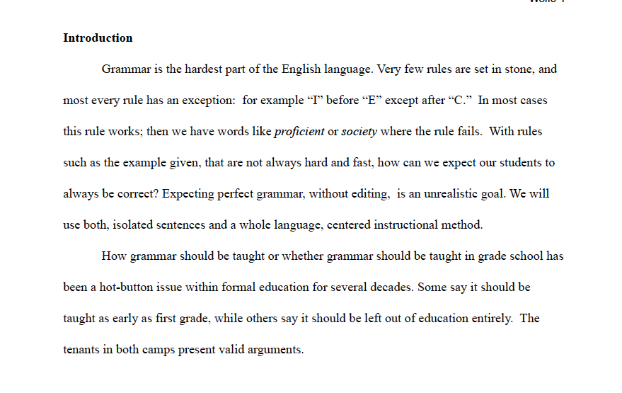
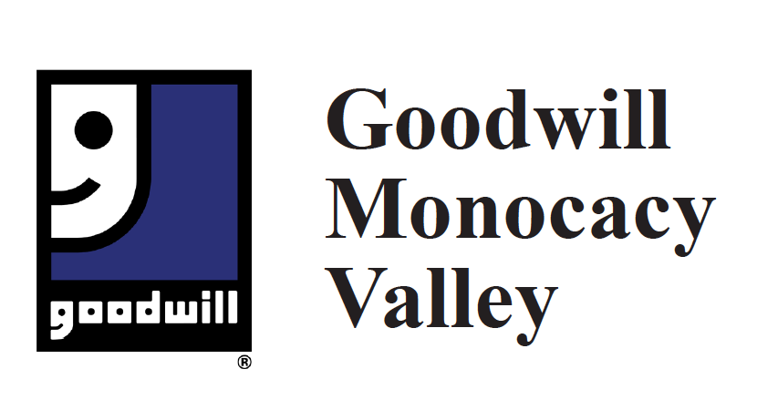
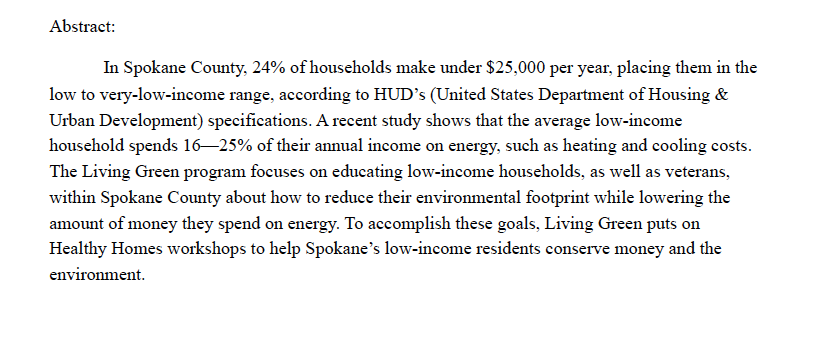

Teaching Grammar
Click thumbnail to view document
The Parent-Teacher Association at Lewis & Clark High School wanted a position statement about whether or not to teach grammar to which school students. I researched different ways to teach grammar and their effectiveness. I also researched whether teaching grammar at all was beneficial to the students. The conclusion I came to was that a hybrid approach was best and that grammar should be taught to high school students.
Code of Conduct
Click thumbnail to view document
While working at Goodwill the CEO asks if I could update and create a new the code of conduct because they had lost the electronic file. Goodwill had a paper copy of the old Code of Conduct that I based my layout and copy off of. I used InDesign and Illustrator to make the document. The only challenge was getting the management team to agree upon the copy for the document. I made multiple changes and rearranged the handbook many times before there was a finished document. Now Goodwill Industries has a new electronic document for the Code of Conduct that they can update, and make changes to freely.
Grant Writing
Click thumbnail to view document
Living Green is a program to assist economically disadvantaged individuals with lowering their carbon footprint and reducing power consumption through environmentally friendly practices. The program was being relaunched after losing funding for three years. My job was to research new funding sources, neighborhood statistics, and check that the funding sources had not been applied to already. There were challenges along the way. One of the funders wanted testimonials from clients in the program. Because the files have changed custody and there is a new director for the program, I had difficulty attaining testimonies. To overcome this obstacle I went to the headquarters and searched though boxes of documents until I found testimonies. Overall the project had challenges that were overcome and the grant was funded.